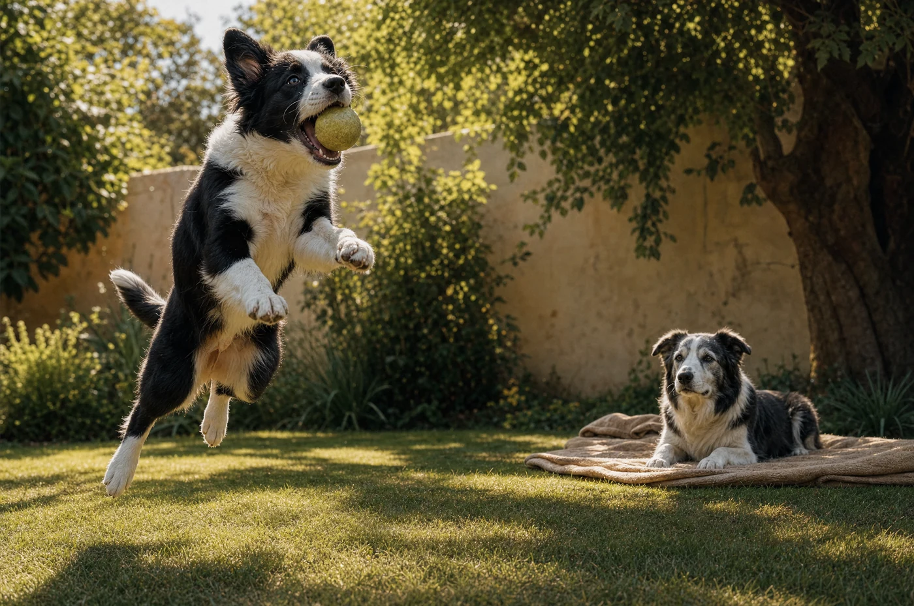

Zuhause
Die wirksamsten Maßnahmen bei Gelenkbeschwerden kosten oft keine 50 Euro und wirken ab dem ersten Tag. Sechs Dinge, die Sie an einem Nachmittag ändern können.

Von allem, was man bei Gelenkbeschwerden tun kann, hat die Wohnung das beste Verhältnis aus Aufwand und Wirkung. Sie kostet meist unter 50 Euro, ist an einem Nachmittag erledigt und wirkt ab dem ersten Tag – im Gegensatz zu allem anderen, das Wochen braucht.
Das ist mit Abstand der wichtigste Punkt. Laminat, Fliesen, Parkett und Vinyl geben Hundekrallen keinen Halt. Ein Hund, der auf glattem Boden wegrutscht, versteift sich unwillkürlich bei jedem Schritt, um das Wegrutschen zu verhindern – und das kostet dauerhaft Kraft. Bei einem unsicheren Hund sehen Sie den Unterschied oft schon am Tag nach dem Auslegen von Läufern.
Legen Sie Teppichläufer oder Anti-Rutsch-Matten auf die Wege, die er täglich geht: vom Liegeplatz zum Napf, zur Haustür, zum Sofa. Nicht die ganze Wohnung – nur seine Routen. Und die ersten Treppenstufen unten, denn dort wird gebremst und angetreten.
Zu lange Krallen verändern die Stellung der Zehen und damit die Belastung der ganzen Gliedmaße. Wenn Sie beim Gehen auf Fliesen ein Klackern hören, sind sie zu lang. Das Fell zwischen den Ballen gehört ebenfalls kurz – es wirkt auf glattem Boden wie eine Sohle aus Filz.
Sprung aufs Sofa, Sprung ins Bett, Sprung in den Kofferraum: Beim Absprung wirkt ein Vielfaches des Körpergewichts auf die Hinterhand, bei der Landung auf die Vorderhand. Das sind die Belastungsspitzen im Alltag eines Hundes, und sie sind vermeidbar.
Ein Hund schläft und ruht zwölf bis achtzehn Stunden am Tag. Wo er das tut, ist deshalb keine Nebensache. Ein zu dünnes Kissen lässt ihn auf dem Boden aufliegen, ein zu weiches macht das Aufstehen schwer – er sinkt ein und muss sich herausdrücken.
Gut ist eine feste, formstabile Unterlage von einigen Zentimetern Dicke, groß genug zum Ausstrecken auf der Seite, an einem zugfreien und nicht zu kalten Ort. Fliesen unter dem Bett sind ungünstig, ebenso der Platz direkt neben der Terrassentür im Winter. Wärme tut steifen Gelenken gut – ein Ruheplatz in der Nähe einer Heizung ist keine Verwöhnung.
Bei Hunden mit Beschwerden in Hals, Schulter oder Ellenbogen kann ein leicht erhöhter Napf das Fressen spürbar erleichtern. Die Empfehlungen dazu sind allerdings nicht einheitlich – bei großen, magenempfindlichen Rassen wird erhöhtes Füttern teils kritisch gesehen. Besprechen Sie das im Zweifel beim nächsten Termin, statt es pauschal umzusetzen.
Unstrittig ist der zweite Punkt: Stellen Sie mehrere Wassernäpfe auf, wenn Ihr Hund ungern aufsteht. Ein Hund, der zu wenig trinkt, weil der Weg zum Napf unangenehm ist, hat ein Problem mehr als nötig.
Steife Gelenke mögen Regelmäßigkeit. Feste Zeiten für Runden und Futter, keine langen Phasen ohne Bewegung, kein Wochenende mit sechs Stunden Wandern nach fünf Tagen auf dem Büroteppich. Der klassische Fehler ist nicht zu wenig Bewegung unter der Woche, sondern zu viel am Sonntag.
Legen Sie einen Zettel an den Kühlschrank und notieren Sie eine Woche lang jeden Morgen eine Zahl von 1 bis 5 für das Aufstehen. Das klingt kleinlich und ist die einzige Methode, mit der Sie später beurteilen können, ob etwas geholfen hat. Menschen erinnern sich an Verbesserungen, die sie sich wünschen – Zahlen tun das nicht.
Falls Sie nur eine Sache aus diesem Artikel mitnehmen: Fangen Sie beim Boden an. Es ist die billigste Maßnahme, sie wirkt sofort, und sie betrifft jeden einzelnen Schritt, den Ihr Hund zu Hause macht. Alles andere kommt danach.
Geschrieben von der Redaktion von NatureFlow Pets. Dieser Artikel ersetzt keine tierärztliche Beratung. Wenn Ihr Hund lahmt, Schmerzen zeigt oder sein Verhalten sich ändert, gehört er untersucht – alles Weitere kommt danach. Vor dem Livegang wird jeder Ratgeber-Text von unserer tierärztlichen Beratung gegengelesen.
Weiterlesen

